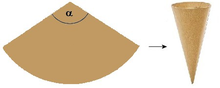

Puzzle 38: Wundertüte für Ronja

Ein Kreissektor mit Zentriwinkel α wird derart zusammengebogen, dass er als Mantel eines geraden Kreiskegels taugt.
Es entsteht so eine Wundertüte für Ronja. Sie möchte, dass darin möglichst viele Geschenke Platz haben.
Wie gross muss α sein, damit die Wundertüte maximales Volumen hat?
©1997 - 2026 www.mathematik.ch |🔍